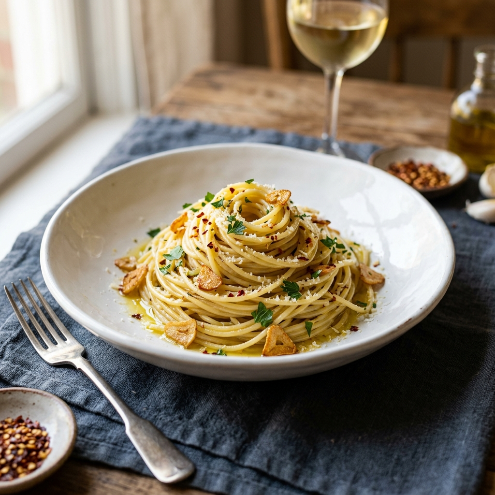

Description
A simple, aromatic pasta dish that highlights the beauty of garlic and olive oil. Perfect for a quick weeknight dinner.
Ingredients
- 250g Spaghetti
- 4 cloves Garlic, thinly sliced
- 1/4 cup Extra virgin olive oil
- 1/2 tsp Red pepper flakes
- Fresh parsley, chopped
- Salt and black pepper to taste
- Grated Parmesan cheese (optional)
Instructions
- Bring a large pot of salted water to a boil. Add the spaghetti and cook until al dente.
- While the pasta cooks, heat the olive oil in a large skillet over medium heat.
- Add the sliced garlic and red pepper flakes. Sauté for 1-2 minutes until the garlic is golden brown but not burnt.
- Reserve 1/2 cup of pasta water, then drain the spaghetti.
- Add the spaghetti and reserved pasta water to the skillet. Toss well to coat the pasta in the oil.
- Remove from heat, stir in fresh parsley, and season with salt and pepper.
- Serve immediately with Parmesan cheese if desired.